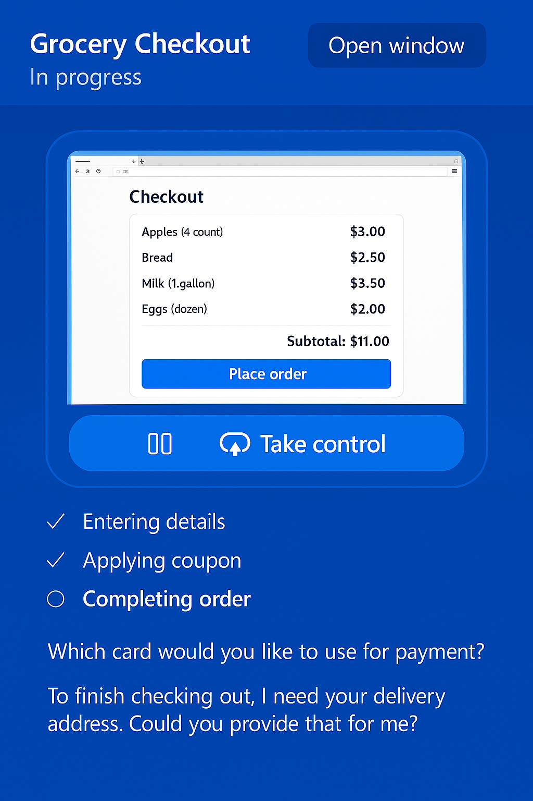
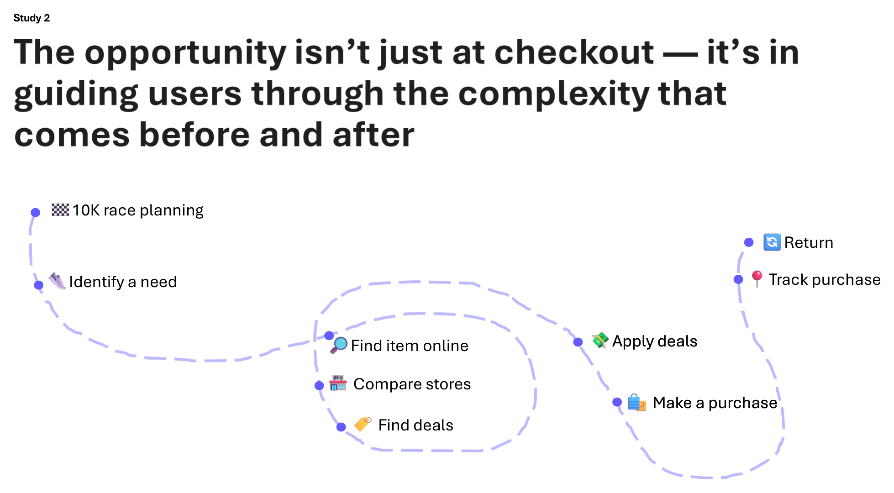
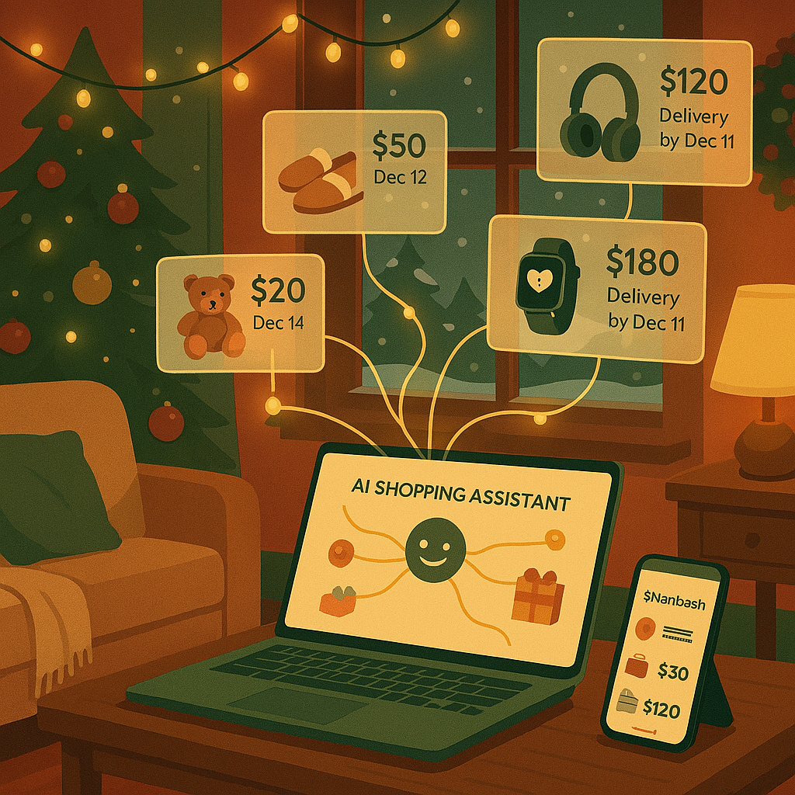
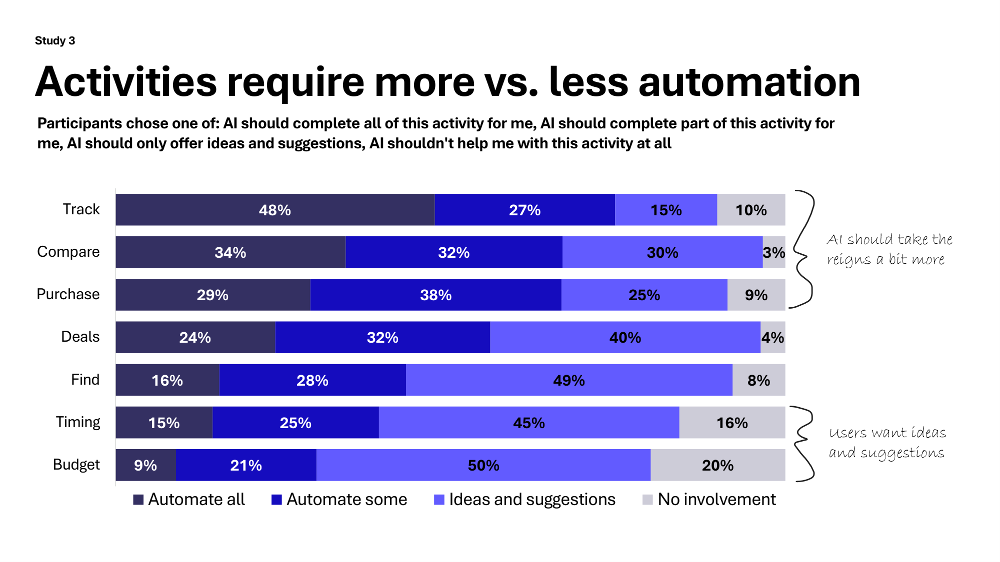
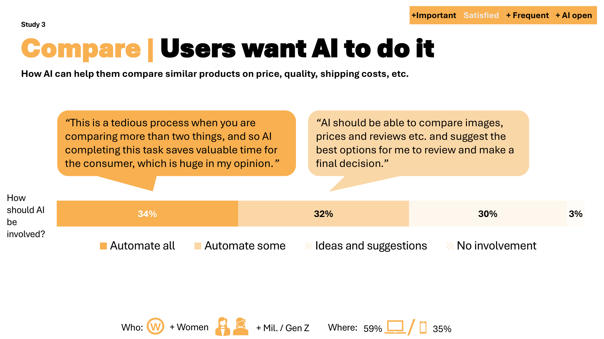
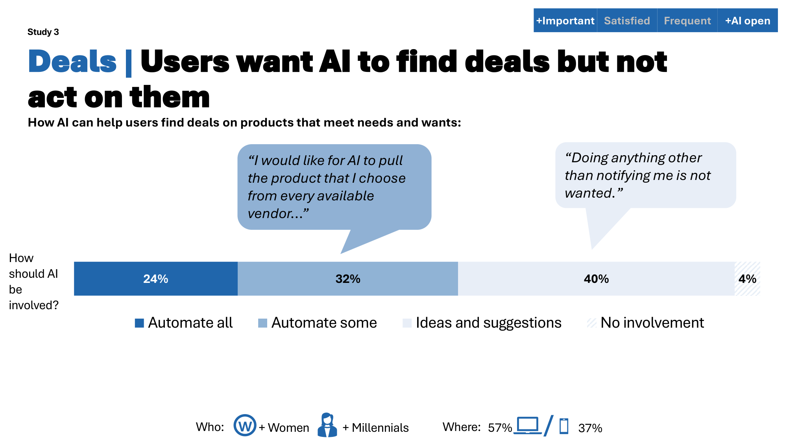
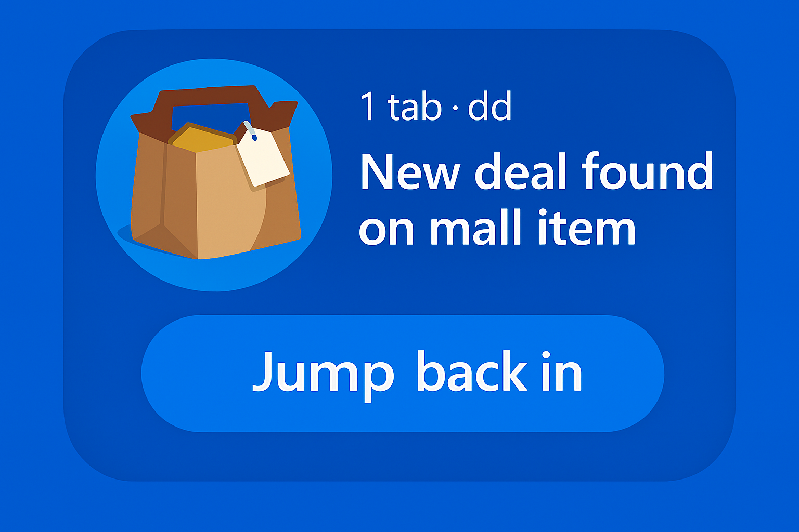
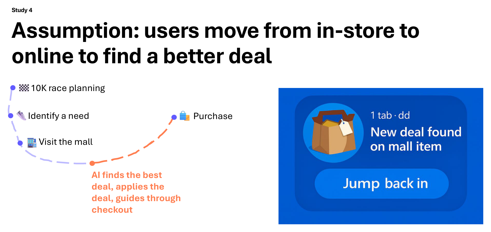

What helps users comprehend the agentic checkout experience enough to meaningfully give consent?
What helps users comprehend and see value in the First Run Experience of the agentic checkout experience?

They assumed email, location, and browsing history would be included — but not financial information.
Users don't know what happens after clicking ‘Allow.’
The small window and extra buttons felt like overkill.
Auto-populating in the browser already does the job for most simple cases.
“It's new, but it's not revolutionary. When it has original thoughts… that's revolutionary.”— Dylan, Copilot Pro user
“It's more of a partner than an assistant to me. I wouldn't use it this way.”— Brian, Copilot Pro user

🏃 Picture a 10K race‑planning shopping journey. There's so much more complexity here than add to cart & check out. How to plan for that complexity?
Original sketch from the deck — the opportunity isn't just at checkout, it's in guiding users through the complexity that comes before and after.
Extend consent with tooltips, and build agentic AI that partners with users to help them navigate complex decisions.
Designers made rapid iterative changes in the short term, and workstreams initiated foundational research in the long term.
Picture a 10K race‑planning shopping journey. There's so much more complexity here than add to cart & check out. How to plan for that complexity?
Original sketch from the deck — the opportunity isn't just at checkout, it's in guiding users through the complexity that comes before and after.
Which moments in the shopping journey create the strongest opportunities for agentic AI?

Click any column header to sort
| Job | Important | Satisfied | Frequency | AI Open |
|---|---|---|---|---|
| 🔍 Find | 4.51 | 4.22 | 4.01 | 4.11 |
| 🛒 Purchase | 4.39 | 4.10 | 3.74 | 4.00 |
| 📦 Track | 4.38 | 4.33 | 3.70 | ▲4.25 |
| 🏷️ Deals | 4.37 | 4.05 | 3.85 | ▲4.36 |
| ⚖️ Compare | 4.35 | 4.03 | ▲3.94 | ▲4.42 |
| ⏱️ Timing | 4.29 | 4.00 | 3.41 | ▼3.31 |
| 💰 Budget | 4.22 | 4.09 | 3.28 | ▼3.20 |
Users are relatively satisfied with shopping jobs — all scores cluster in the upper right.
Upper-left = high importance, low satisfaction — strongest opportunity for AI to step in. Axes scaled 1–5. Hover each emoji to reveal the job.

🤖 AI should take the reigns a bit more — for Track, Compare, and Purchase, users welcome higher automation.
💡 AI should offer ideas and suggestions only — for Timing and Budget, users are concerned that AI will absorb tasks they would rather handle themselves.
Participants chose one of: AI should complete all of this activity for me · AI should complete part of this activity for me · AI should only offer ideas and suggestions · AI shouldn't help me with this activity at all.


“I enjoy browsing and discovering new things, especially when I'm shopping for something fun.”— User, 23, Texas
“Searching for the best deal is almost like being on a treasure hunt.”— User, 40, Illinois
Seize AI opportunities like finding the right product, finding deals, comparing options, and timing a purchase — with user control.
Designers developed concepts to explore these opportunities.
What helps users continue where they left off after in-person shopping?


“If it was Nike or Adidas, I might want the best price. But if it's just a normal shoes, I might be looking for variety.”— Matt, Edge user
“I think it would also be nice to see the customer reviews right alongside the deal.”— Andrea, Edge user
The same action can signal different Jobs to Be Done — deal-hunting, finding the right item, or seeking inspiration. Build for different intents.
High-level concept enters the next stage in the product development cycle.
Across four shopping studies — from agentic consent and first-run, to surfacing opportunities, to journey continuity — two threads held. Agentic AI earns trust by partnering with users on complex, multi-step tasks, and by making strong suggestions by detecting user in. Shopping demands user control because finances are sensitive and shopping is fun.
Email me for the full story →